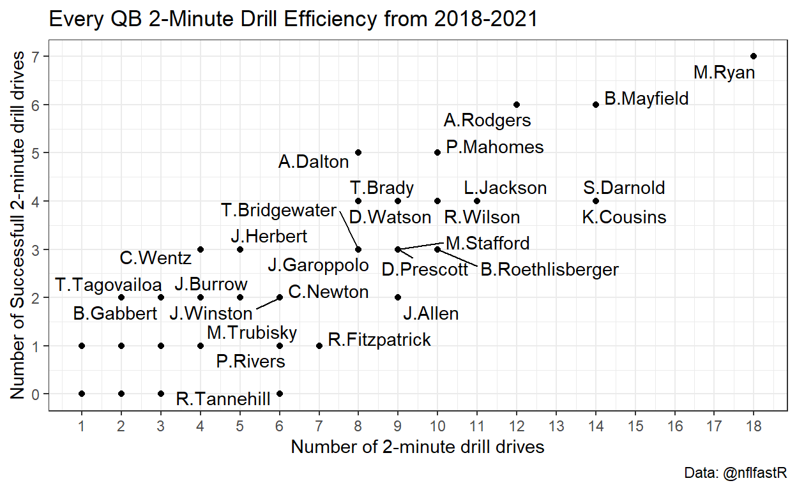
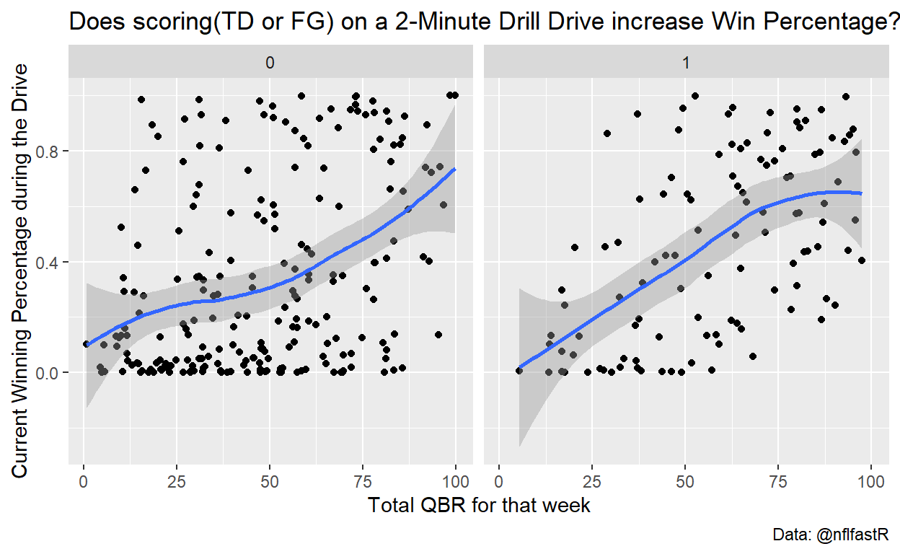
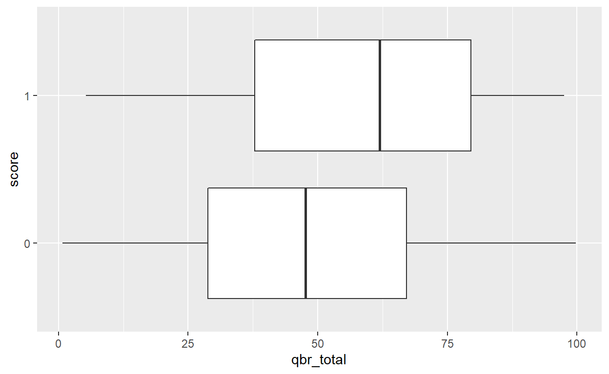
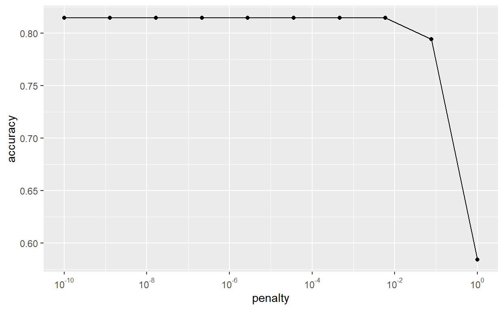
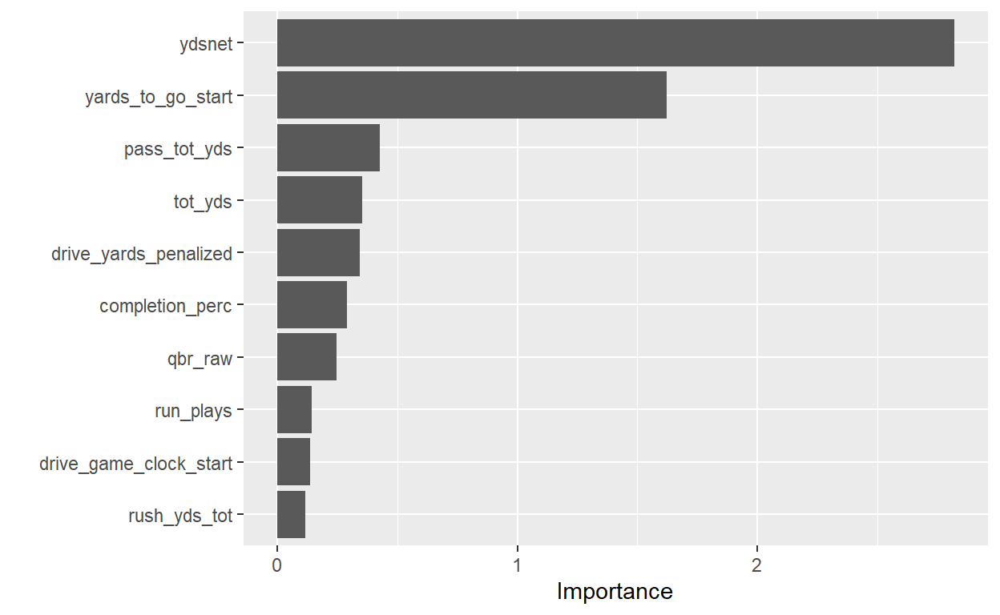
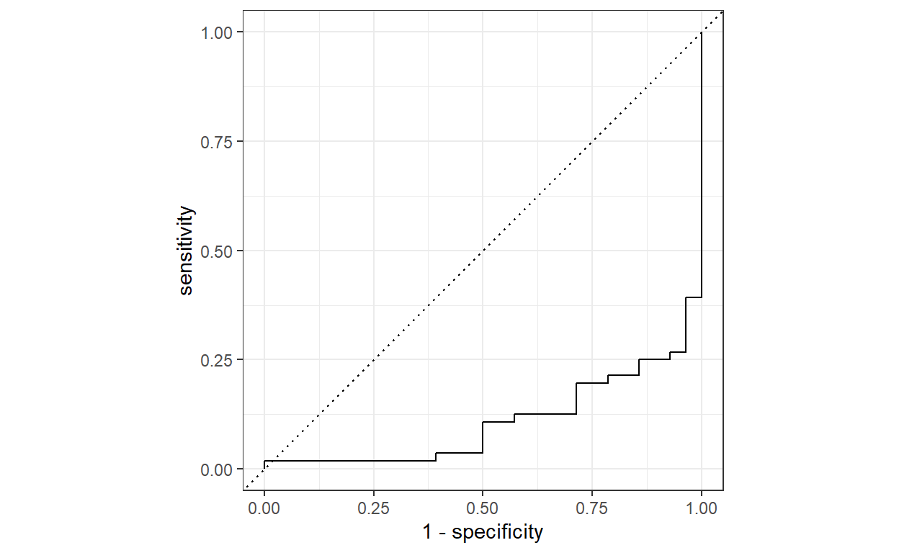
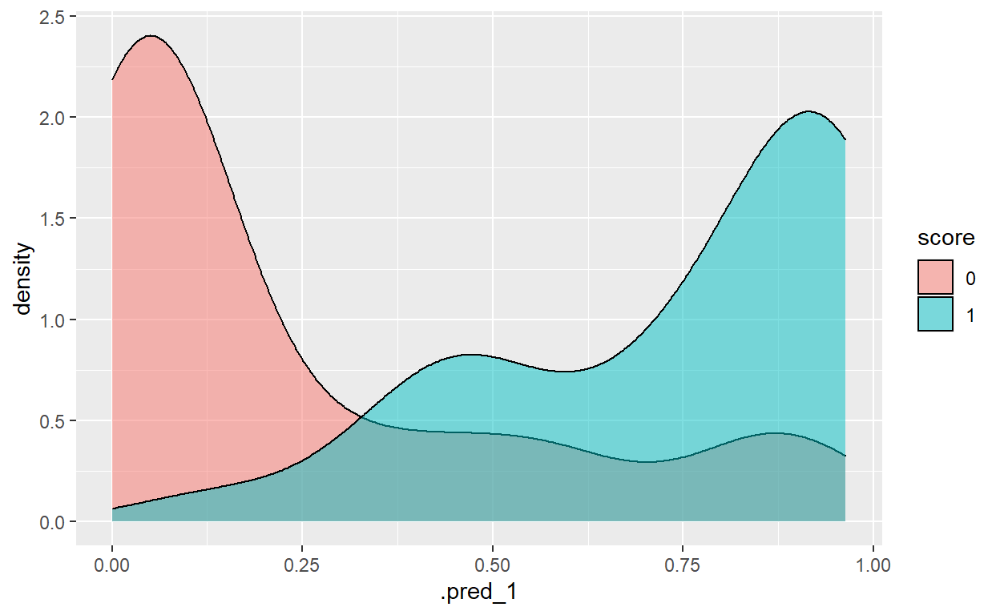
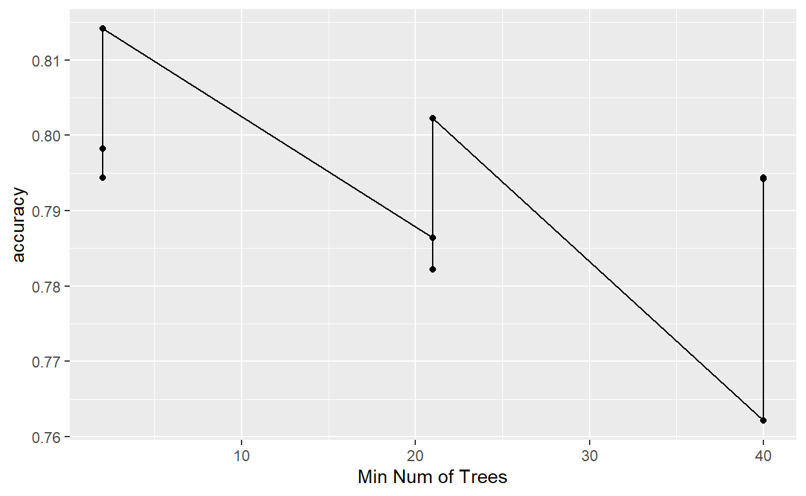
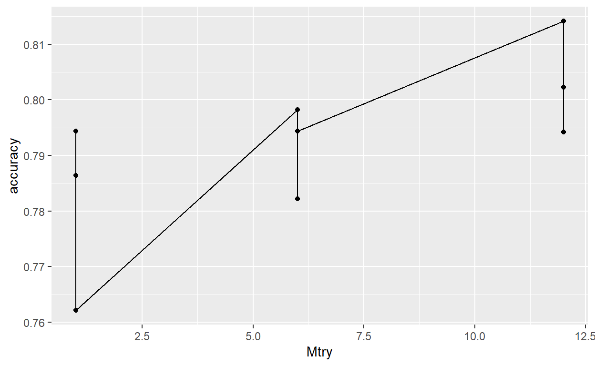

This project dives deeper into the statistical importance of the football strategy known as the 2-Minute Drill. What makes a drive at the end of a half or game so tricky? How can teams effectively increase the chance of success when driving down the field with little time remaining?
If you ever want to watch the greatest minds of the football world prove that they are elite, look no further than a close game with 2 minutes or less left on the clock. The 2-minute Drill has been a staple tactic employed by teams for almost as long as the game has been around. Wikipedia defines this style of hurry-up offense as a high-pressure and fast-paced situational strategy where a team will focus on clock management, maximizing the number of plays available for a scoring attempt before a half (or game) expires. When teams perform the 2-minute drill, you should expect them to manage the clock using timeouts and plays that eliminate a running clock. You can expect a two minute drill drive in about 1 in 5 games, so it makes sense why these drives are so important.
Here you can see the number of drives that began under 2 minutes and 30 seconds left in the first or second halves from 2018 to today. As you can see, it is not too often that a team successfully completes a drive by scoring points. Just more than 21% of the time, teams have scored at least 3 points by kicking a field goal. While only 10% of the time, teams have reached the endzone for 6.
|
Two Minute Drill Success Rates
|
||||
|---|---|---|---|---|
| Number of TDs Scored | Number of FGs Scored | Number of Drives | TD Success Rate | FG Success Rate |
| 45 | 65 | 332 | 0.1355422 | 0.1957831 |
|
2-minute Drills in the last 4 Seasons
|
|||||
|---|---|---|---|---|---|
| season | Number of TDs Scored | Number of FGs Scored | Number of Drives | TD Success Rate | FG Success Rate |
| 2018 | 8 | 18 | 78 | 0.1025641 | 0.2307692 |
| 2019 | 14 | 14 | 88 | 0.1590909 | 0.1590909 |
| 2020 | 15 | 18 | 88 | 0.1704545 | 0.2045455 |
| 2021 | 8 | 15 | 78 | 0.1025641 | 0.1923077 |
Now why should we take a look at this specific aspect of football? A successful 2-minute drill could have massive impacts on the probability of the team winning the game. Let me remind you of week 10 in 2020. The Buffalo Bills drove the length of the field, managing their own two minute drill. Josh Allen and the Bills capped off the drive by finding the endzone when Allen slung a beautiful 40 yard dot to his favorite target Stefon Diggs with just over 30 seconds left in the game. There was a 90% probability that the Bills had just secured the win, but the Cardinals had other plans.
In a mere 3 plays, the Cardinals marched down to the 43 yard line in Bills territory. The rest will go down as one of the greatest plays in NFL history. Murray scrambles out of the pocket and heaves one down the field to a triple teamed DeAndre Hopkins who reaches up and snags the Bills hopes. Although a little luck was involved in this drive, the Cardinals effectively managed the amount of time they were given and won the game despite the statistics. That is what a great two minute drill drive can do for a team any given week.
Here we can see the quarterbacks that have the best rate of scoring either a field goal or a touchdown over the past 4 seasons. Those closer to the top right show us that they are efficient when the clock strike below 2.

There are few positions that require such a responsibility as an NFL Quarterback. The only other position in team sports that stand out to me is an MLB Pitcher. As you can see from these two plots, the better the QB plays that week, the higher probability the team has at completing that 2-minute drill with new points on the board. Every decision a Quarterback makes during those final 2 minutes could have massive repercussions, so its important the team has the right guy for the job.


We will explore the relationship between football stats in our set and the score outcome of two minute drills from the 2018 - 2021 seasons.
We will do so using primarily a logistic regression and will also explore random forests and boosted trees to ensure we explored all other options.
Our primary model we will be focusing on is a Logistic Regression. This model specializes in predicting probabilities of our outcome, not just the outcome. That way with this model, we can not only see whether it predicts a score or not but we can see and have access to the probabilities it used to predict the outcome.
When creating this model, we will be using a Lasso approach which stands for Least Absolute Shrinkage and Selection Operator. In short, this type of modeling selects variables and their impact size while taking into account maximizing the accuracy and interpretability of the model.
Below are the results of our 5 fold cross validation from our modeling. In short, we separated the data into two groups: one to build the model off (75%) and the other to test and see how well the model works.
Each fold is using a different part of the 75% of the training set to build the model and testing upon the rest. This is done over and over and over to amass tons of data on the best logistic regression model.
|
Lasso Log Reg Models Performance
|
|||||
|---|---|---|---|---|---|
| id | penalty | .metric | .estimator | .estimate | .config |
| Fold1 | 0.0000000 | accuracy | binary | 0.7400000 | Preprocessor1_Model01 |
| Fold1 | 0.0000000 | accuracy | binary | 0.7400000 | Preprocessor1_Model02 |
| Fold1 | 0.0000000 | accuracy | binary | 0.7400000 | Preprocessor1_Model03 |
| Fold1 | 0.0000002 | accuracy | binary | 0.7400000 | Preprocessor1_Model04 |
| Fold1 | 0.0000028 | accuracy | binary | 0.7400000 | Preprocessor1_Model05 |
| Fold1 | 0.0000359 | accuracy | binary | 0.7400000 | Preprocessor1_Model06 |
| Fold1 | 0.0004642 | accuracy | binary | 0.7400000 | Preprocessor1_Model07 |
| Fold1 | 0.0059948 | accuracy | binary | 0.7400000 | Preprocessor1_Model08 |
| Fold1 | 0.0774264 | accuracy | binary | 0.7200000 | Preprocessor1_Model09 |
| Fold1 | 1.0000000 | accuracy | binary | 0.4400000 | Preprocessor1_Model10 |
| Fold2 | 0.0000000 | accuracy | binary | 0.8600000 | Preprocessor1_Model01 |
| Fold2 | 0.0000000 | accuracy | binary | 0.8600000 | Preprocessor1_Model02 |
| Fold2 | 0.0000000 | accuracy | binary | 0.8600000 | Preprocessor1_Model03 |
| Fold2 | 0.0000002 | accuracy | binary | 0.8600000 | Preprocessor1_Model04 |
| Fold2 | 0.0000028 | accuracy | binary | 0.8600000 | Preprocessor1_Model05 |
| Fold2 | 0.0000359 | accuracy | binary | 0.8600000 | Preprocessor1_Model06 |
| Fold2 | 0.0004642 | accuracy | binary | 0.8600000 | Preprocessor1_Model07 |
| Fold2 | 0.0059948 | accuracy | binary | 0.8400000 | Preprocessor1_Model08 |
| Fold2 | 0.0774264 | accuracy | binary | 0.8200000 | Preprocessor1_Model09 |
| Fold2 | 1.0000000 | accuracy | binary | 0.6600000 | Preprocessor1_Model10 |
| Fold3 | 0.0000000 | accuracy | binary | 0.8800000 | Preprocessor1_Model01 |
| Fold3 | 0.0000000 | accuracy | binary | 0.8800000 | Preprocessor1_Model02 |
| Fold3 | 0.0000000 | accuracy | binary | 0.8800000 | Preprocessor1_Model03 |
| Fold3 | 0.0000002 | accuracy | binary | 0.8800000 | Preprocessor1_Model04 |
| Fold3 | 0.0000028 | accuracy | binary | 0.8800000 | Preprocessor1_Model05 |
| Fold3 | 0.0000359 | accuracy | binary | 0.8800000 | Preprocessor1_Model06 |
| Fold3 | 0.0004642 | accuracy | binary | 0.8800000 | Preprocessor1_Model07 |
| Fold3 | 0.0059948 | accuracy | binary | 0.8800000 | Preprocessor1_Model08 |
| Fold3 | 0.0774264 | accuracy | binary | 0.8800000 | Preprocessor1_Model09 |
| Fold3 | 1.0000000 | accuracy | binary | 0.7800000 | Preprocessor1_Model10 |
| Fold4 | 0.0000000 | accuracy | binary | 0.8163265 | Preprocessor1_Model01 |
| Fold4 | 0.0000000 | accuracy | binary | 0.8163265 | Preprocessor1_Model02 |
| Fold4 | 0.0000000 | accuracy | binary | 0.8163265 | Preprocessor1_Model03 |
| Fold4 | 0.0000002 | accuracy | binary | 0.8163265 | Preprocessor1_Model04 |
| Fold4 | 0.0000028 | accuracy | binary | 0.8163265 | Preprocessor1_Model05 |
| Fold4 | 0.0000359 | accuracy | binary | 0.8163265 | Preprocessor1_Model06 |
| Fold4 | 0.0004642 | accuracy | binary | 0.8163265 | Preprocessor1_Model07 |
| Fold4 | 0.0059948 | accuracy | binary | 0.8367347 | Preprocessor1_Model08 |
| Fold4 | 0.0774264 | accuracy | binary | 0.8163265 | Preprocessor1_Model09 |
| Fold4 | 1.0000000 | accuracy | binary | 0.3469388 | Preprocessor1_Model10 |
| Fold5 | 0.0000000 | accuracy | binary | 0.7755102 | Preprocessor1_Model01 |
| Fold5 | 0.0000000 | accuracy | binary | 0.7755102 | Preprocessor1_Model02 |
| Fold5 | 0.0000000 | accuracy | binary | 0.7755102 | Preprocessor1_Model03 |
| Fold5 | 0.0000002 | accuracy | binary | 0.7755102 | Preprocessor1_Model04 |
| Fold5 | 0.0000028 | accuracy | binary | 0.7755102 | Preprocessor1_Model05 |
| Fold5 | 0.0000359 | accuracy | binary | 0.7755102 | Preprocessor1_Model06 |
| Fold5 | 0.0004642 | accuracy | binary | 0.7755102 | Preprocessor1_Model07 |
| Fold5 | 0.0059948 | accuracy | binary | 0.7755102 | Preprocessor1_Model08 |
| Fold5 | 0.0774264 | accuracy | binary | 0.7346939 | Preprocessor1_Model09 |
| Fold5 | 1.0000000 | accuracy | binary | 0.6938776 | Preprocessor1_Model10 |
Those different folds and their resulting accuracies were also used to try out different penalty parameters for lasso, which in this case helps to determine what the insignificance cut off is for throwing out indeterminate variables. The accuracies appear to be quite high for most penalties.

The goal of modeling is to extract our most accurate model and its associated penalty so that we can finalize the model and interpret some meaning.
|
Lasso Log Reg Best Accuracy Models
|
||||||
|---|---|---|---|---|---|---|
| penalty | .metric | .estimator | mean | n | std_err | .config |
| 0.0059948 | accuracy | binary | 0.8144490 | 5 | 0.0250053 | Preprocessor1_Model08 |
| 0.0000000 | accuracy | binary | 0.8143673 | 5 | 0.0259174 | Preprocessor1_Model01 |
| 0.0000000 | accuracy | binary | 0.8143673 | 5 | 0.0259174 | Preprocessor1_Model02 |
| 0.0000000 | accuracy | binary | 0.8143673 | 5 | 0.0259174 | Preprocessor1_Model03 |
| 0.0000002 | accuracy | binary | 0.8143673 | 5 | 0.0259174 | Preprocessor1_Model04 |
The best penalty which maximized our accuracy is below and will be directly input to finalize our model.
|
Lasso Log Reg Best Model
|
|
|---|---|
| penalty | .config |
| 0.0059948 | Preprocessor1_Model08 |
== Workflow ==========================================================
Preprocessor: Recipe
Model: logistic_reg()
-- Preprocessor ------------------------------------------------------
3 Recipe Steps
* step_upsample()
* step_dummy()
* step_normalize()
-- Model -------------------------------------------------------------
Logistic Regression Model Specification (classification)
Main Arguments:
penalty = 0.00599484250318942
mixture = 1
Computational engine: glmnet Now for some interpretation and meaning.below we have the coefficients of each variable from the logistic regression. While normally in log odds form, we exponentiated the variable coefficients to now have them in an odds and odds ratio form, a much more interpretable style.
|
Lasso Log Reg Finalized Model Coefficients
|
|
|---|---|
| term | estimate |
| (Intercept) | 0.8656817 |
| qbr_raw | 1.2605909 |
| qbr_total | 1.0000000 |
| pass_tot_yds | 0.8578689 |
| tot_yds | 1.0207665 |
| ydsnet | 13.4394059 |
| rush_yds_tot | 1.0000000 |
| completion_perc | 0.9992010 |
| run_plays | 1.0000000 |
| pass_plays | 1.0000000 |
| drive_yards_penalized | 1.2622421 |
| drive_game_clock_start | 0.9124922 |
| yards_to_go_start | 0.2424558 |
Above, you can see the logistic regression model output for all of our variables and their coefficients.
Generally, if a coefficient is above one (1) it shows a positive impact upon the likelihood of a two minute drill drive resulting in success.
A coefficient value of one (1) indicates no change. And a coefficient value of less than one (1) means an increase in that variable results in a lesser chance of scoring.
Variables that positively impact the likelihood of scoring:
Variables that negatively impact the likelihood of scoring:
You can see the result of yards net having the largest impact upon score outcome in the Variable Importance plot below.
The massive positive impact upon score outcome is nearly matched by the massive negative impact upon scoring derived from the yards to go variable, which had the largest negatively correlated variable coefficient above.
You may notice more variables included on the VI plot than coefficients above. That is because the lasso approach regularized and shrunk the least contributing variables coefficients to basically zero, as seen with these additional variables being quite unimportant to predicting score outcome.

Our best fitting model was quite well in prediction with a strong 86% accuracy. Additionally, its ROC AUC, or the area under the curve, is quite high as well at 88% denoting a high level of confidence that the model will be able to distinguish between the score and no score class (88% confident to be exact).
|
Lasso Log Reg Best Model Accuracy and ROC
|
|||
|---|---|---|---|
| .metric | .estimator | .estimate | .config |
| accuracy | binary | 0.7976190 | Preprocessor1_Model1 |
| roc_auc | binary | 0.8928571 | Preprocessor1_Model1 |
We can dig a bit deeper into how well the model predicts by looking at how the model predicts on certain specific instances from our testing set. Along with predicted class and actual class, you can also see the probability associated with each class leading to the prediction, with 50% as the threshold.
|
Lasso Log Reg Model Predictions
|
||||||
|---|---|---|---|---|---|---|
| id | .pred_0 | .pred_1 | .row | .pred_class | score | .config |
| train/test split | 0.9640260 | 0.0359740 | 2 | 0 | 0 | Preprocessor1_Model1 |
| train/test split | 0.9732424 | 0.0267576 | 4 | 0 | 0 | Preprocessor1_Model1 |
| train/test split | 0.5859085 | 0.4140915 | 7 | 0 | 1 | Preprocessor1_Model1 |
| train/test split | 0.9437801 | 0.0562199 | 8 | 0 | 0 | Preprocessor1_Model1 |
| train/test split | 0.0770452 | 0.9229548 | 11 | 1 | 0 | Preprocessor1_Model1 |
| train/test split | 0.2627125 | 0.7372875 | 18 | 1 | 1 | Preprocessor1_Model1 |
| train/test split | 0.9900497 | 0.0099503 | 24 | 0 | 0 | Preprocessor1_Model1 |
| train/test split | 0.8665691 | 0.1334309 | 25 | 0 | 1 | Preprocessor1_Model1 |
| train/test split | 0.0437545 | 0.9562455 | 36 | 1 | 1 | Preprocessor1_Model1 |
| train/test split | 0.4207155 | 0.5792845 | 48 | 1 | 0 | Preprocessor1_Model1 |
| train/test split | 0.2940966 | 0.7059034 | 49 | 1 | 1 | Preprocessor1_Model1 |
| train/test split | 0.9339000 | 0.0661000 | 50 | 0 | 0 | Preprocessor1_Model1 |
| train/test split | 0.0703400 | 0.9296600 | 63 | 1 | 1 | Preprocessor1_Model1 |
| train/test split | 0.0453868 | 0.9546132 | 64 | 1 | 1 | Preprocessor1_Model1 |
| train/test split | 0.8800837 | 0.1199163 | 65 | 0 | 0 | Preprocessor1_Model1 |
| train/test split | 0.9410727 | 0.0589273 | 68 | 0 | 0 | Preprocessor1_Model1 |
| train/test split | 0.5638419 | 0.4361581 | 71 | 0 | 0 | Preprocessor1_Model1 |
| train/test split | 0.9879537 | 0.0120463 | 74 | 0 | 0 | Preprocessor1_Model1 |
| train/test split | 0.9095917 | 0.0904083 | 78 | 0 | 0 | Preprocessor1_Model1 |
| train/test split | 0.9986199 | 0.0013801 | 82 | 0 | 0 | Preprocessor1_Model1 |
| train/test split | 0.3986212 | 0.6013788 | 84 | 1 | 0 | Preprocessor1_Model1 |
| train/test split | 0.5877888 | 0.4122112 | 86 | 0 | 1 | Preprocessor1_Model1 |
| train/test split | 0.2152162 | 0.7847838 | 90 | 1 | 0 | Preprocessor1_Model1 |
| train/test split | 0.0723483 | 0.9276517 | 91 | 1 | 1 | Preprocessor1_Model1 |
| train/test split | 0.0448962 | 0.9551038 | 102 | 1 | 1 | Preprocessor1_Model1 |
| train/test split | 0.1849738 | 0.8150262 | 107 | 1 | 1 | Preprocessor1_Model1 |
| train/test split | 0.7253247 | 0.2746753 | 108 | 0 | 0 | Preprocessor1_Model1 |
| train/test split | 0.9991837 | 0.0008163 | 111 | 0 | 0 | Preprocessor1_Model1 |
| train/test split | 0.9337336 | 0.0662664 | 121 | 0 | 0 | Preprocessor1_Model1 |
| train/test split | 0.4673016 | 0.5326984 | 122 | 1 | 1 | Preprocessor1_Model1 |
| train/test split | 0.6597570 | 0.3402430 | 129 | 0 | 1 | Preprocessor1_Model1 |
| train/test split | 0.9602456 | 0.0397544 | 133 | 0 | 0 | Preprocessor1_Model1 |
| train/test split | 0.0705417 | 0.9294583 | 141 | 1 | 1 | Preprocessor1_Model1 |
| train/test split | 0.9722851 | 0.0277149 | 142 | 0 | 0 | Preprocessor1_Model1 |
| train/test split | 0.9392277 | 0.0607723 | 149 | 0 | 0 | Preprocessor1_Model1 |
| train/test split | 0.0472814 | 0.9527186 | 151 | 1 | 1 | Preprocessor1_Model1 |
| train/test split | 0.1221500 | 0.8778500 | 152 | 1 | 0 | Preprocessor1_Model1 |
| train/test split | 0.4002076 | 0.5997924 | 154 | 1 | 0 | Preprocessor1_Model1 |
| train/test split | 0.9738012 | 0.0261988 | 155 | 0 | 0 | Preprocessor1_Model1 |
| train/test split | 0.8785670 | 0.1214330 | 160 | 0 | 0 | Preprocessor1_Model1 |
| train/test split | 0.1004549 | 0.8995451 | 164 | 1 | 1 | Preprocessor1_Model1 |
| train/test split | 0.8652678 | 0.1347322 | 169 | 0 | 0 | Preprocessor1_Model1 |
| train/test split | 0.9832480 | 0.0167520 | 173 | 0 | 0 | Preprocessor1_Model1 |
| train/test split | 0.0636686 | 0.9363314 | 177 | 1 | 1 | Preprocessor1_Model1 |
| train/test split | 0.9698480 | 0.0301520 | 180 | 0 | 0 | Preprocessor1_Model1 |
| train/test split | 0.9658407 | 0.0341593 | 182 | 0 | 0 | Preprocessor1_Model1 |
| train/test split | 0.6698217 | 0.3301783 | 189 | 0 | 0 | Preprocessor1_Model1 |
| train/test split | 0.1771437 | 0.8228563 | 192 | 1 | 1 | Preprocessor1_Model1 |
| train/test split | 0.4492787 | 0.5507213 | 197 | 1 | 0 | Preprocessor1_Model1 |
| train/test split | 0.9914737 | 0.0085263 | 201 | 0 | 0 | Preprocessor1_Model1 |
| train/test split | 0.6475561 | 0.3524439 | 205 | 0 | 0 | Preprocessor1_Model1 |
| train/test split | 0.7322905 | 0.2677095 | 206 | 0 | 0 | Preprocessor1_Model1 |
| train/test split | 0.5184468 | 0.4815532 | 207 | 0 | 0 | Preprocessor1_Model1 |
| train/test split | 0.9936359 | 0.0063641 | 211 | 0 | 0 | Preprocessor1_Model1 |
| train/test split | 0.5370902 | 0.4629098 | 214 | 0 | 1 | Preprocessor1_Model1 |
| train/test split | 0.8521797 | 0.1478203 | 216 | 0 | 0 | Preprocessor1_Model1 |
| train/test split | 0.4968382 | 0.5031618 | 222 | 1 | 1 | Preprocessor1_Model1 |
| train/test split | 0.8277949 | 0.1722051 | 223 | 0 | 0 | Preprocessor1_Model1 |
| train/test split | 0.9768771 | 0.0231229 | 224 | 0 | 0 | Preprocessor1_Model1 |
| train/test split | 0.2863538 | 0.7136462 | 236 | 1 | 1 | Preprocessor1_Model1 |
| train/test split | 0.8879658 | 0.1120342 | 239 | 0 | 0 | Preprocessor1_Model1 |
| train/test split | 0.0369594 | 0.9630406 | 241 | 1 | 0 | Preprocessor1_Model1 |
| train/test split | 0.0546965 | 0.9453035 | 243 | 1 | 1 | Preprocessor1_Model1 |
| train/test split | 0.0469425 | 0.9530575 | 254 | 1 | 1 | Preprocessor1_Model1 |
| train/test split | 0.5783051 | 0.4216949 | 260 | 0 | 0 | Preprocessor1_Model1 |
| train/test split | 0.9562602 | 0.0437398 | 263 | 0 | 0 | Preprocessor1_Model1 |
| train/test split | 0.2790645 | 0.7209355 | 266 | 1 | 1 | Preprocessor1_Model1 |
| train/test split | 0.9958274 | 0.0041726 | 270 | 0 | 0 | Preprocessor1_Model1 |
| train/test split | 0.9864895 | 0.0135105 | 273 | 0 | 0 | Preprocessor1_Model1 |
| train/test split | 0.9024911 | 0.0975089 | 279 | 0 | 0 | Preprocessor1_Model1 |
| train/test split | 0.8996745 | 0.1003255 | 285 | 0 | 0 | Preprocessor1_Model1 |
| train/test split | 0.9929761 | 0.0070239 | 291 | 0 | 0 | Preprocessor1_Model1 |
| train/test split | 0.9737378 | 0.0262622 | 295 | 0 | 0 | Preprocessor1_Model1 |
| train/test split | 0.0857039 | 0.9142961 | 298 | 1 | 1 | Preprocessor1_Model1 |
| train/test split | 0.9614318 | 0.0385682 | 299 | 0 | 0 | Preprocessor1_Model1 |
| train/test split | 0.9768009 | 0.0231991 | 304 | 0 | 0 | Preprocessor1_Model1 |
| train/test split | 0.5208938 | 0.4791062 | 318 | 0 | 1 | Preprocessor1_Model1 |
| train/test split | 0.9832017 | 0.0167983 | 319 | 0 | 0 | Preprocessor1_Model1 |
| train/test split | 0.1531777 | 0.8468223 | 321 | 1 | 0 | Preprocessor1_Model1 |
| train/test split | 0.0920780 | 0.9079220 | 325 | 1 | 1 | Preprocessor1_Model1 |
| train/test split | 0.8585376 | 0.1414624 | 327 | 0 | 0 | Preprocessor1_Model1 |
| train/test split | 0.0401372 | 0.9598628 | 329 | 1 | 1 | Preprocessor1_Model1 |
| train/test split | 0.1329296 | 0.8670704 | 330 | 1 | 0 | Preprocessor1_Model1 |
| train/test split | 0.1298200 | 0.8701800 | 332 | 1 | 0 | Preprocessor1_Model1 |
We can also look at our predictions in the aggregate with a matrixed table.
Truth
Prediction 0 1
0 45 11
1 6 22Other important model metrics are laid out in the table below, with these metrics also proving how well the model predicts.
Metrics to Note:
Sens = Sensitivity Ratio between how much was classified as a score to how much was actually a score of that Spec = Specificity Ratio between how much was classified as not a score to how much was actually not a score of that Precision Ratio of how much was correctly classified as a score out of all scores F meas Indicates classification strength
|
Lasso Log Reg Finalized Model Metrics
|
||
|---|---|---|
| .metric | .estimator | .estimate |
| accuracy | binary | 0.7976190 |
| sens | binary | 0.8035714 |
| spec | binary | 0.7857143 |
| precision | binary | 0.8823529 |
| f_meas | binary | 0.8411215 |
The relationship between sensitivity and specificity can be seen below The dotted line in the middle is what the roc curve would look like if the model predicted based on random 50/50 choice. The further our line is away from this line, the better the model is as we see.

Below is a lay out of what probabilities in this model resulted in certain predictions. You can see the impact of the 0.5 threshold as hardly any 1 predictions occur where the probability of being 1 is less than 0.5 but it jumps after crossing 0.5.

With this great and accurate model, we put it to the test with a recent drive from the College Football playoffs.
Predicting with our model
(2) Clemson vs (1) Alabama: Jan 9, 2017
31-28 Alabama with 2:01 left in 4Q Clemson ball on Clem 32, 68 yards to go to win the game Clemson ends up driving all 68 yards for a Deshaun Watson pass to Hunter Renfrow for a TD to win the game with 1 second left.
How does our best model, the logistic regression predict this?
Data was obtained from ESPNs cache of play by play . some unavailable data at the time like game qbr was replaced with an average of that metric for that player for the season
|
Lasso Log Reg New QB Entry
|
||||||||||||
|---|---|---|---|---|---|---|---|---|---|---|---|---|
| qbr_raw | qbr_total | pass_tot_yds | tot_yds | ydsnet | rush_yds_tot | completion_perc | run_plays | pass_plays | drive_yards_penalized | drive_game_clock_start | yards_to_go_start | score |
| 104.5 | 104.5 | 60 | 68 | 68 | 1 | 0.6667 | 1 | 9 | 7 | 127 | 68 | 1 |
|
Lasso Log Reg New QB Entry - Prediction
|
|---|
| .pred_class |
| 1 |
You can see our model predicts a score correctly!
For the reasons above, we feel very comfortable with the highly accurate and interpretable Lasso Log Regression. To ensure we werent missing a home run with any other model types, we also explored modeling with two different decision tree applications.
The next model we will briefly touch upon is a decision tree, specifically a random forest model. This model type uses a series of decision branch offs which work to split based upon significant variables.
Performing a similar process as above, we were able to pull our overall accuracy from our best model and our ROC AUC as well. We can see a decently high 80% accuracy rate and 88% ROC AUC.
|
Decision Tree Random Forest Best Model
|
|||||||
|---|---|---|---|---|---|---|---|
| mtry | min_n | .metric | .estimator | mean | n | std_err | .config |
| 1 | 2 | accuracy | binary | 0.7943673 | 5 | 0.0273602 | Preprocessor1_Model1 |
| 1 | 2 | roc_auc | binary | 0.8706435 | 5 | 0.0105285 | Preprocessor1_Model1 |
|
Decision Tree Random Forest Best Model
|
||
|---|---|---|
| mtry | min_n | .config |
| 12 | 2 | Preprocessor1_Model3 |


You can see a goofier looking accuracy chart as the tuning parameters here are related to how the tree decides cut offs including minimum number of trees. You can see from our selected best model that the min_n optimized value of 2 and mtry value of 6 represent the peak accuracy values.
This model was lacking in interpretability in a sense that we desired a more standard regression output as provided by a logistic regression above.
Yet, this is another model option for future work.
Similar to the previous model we fit, a Boosted Decision tree creates a series of splits, or branches. The only difference with this type of model is that each tree is NOT independent of the others. This Boosted model takes information from the prior trees, and uses it to create the next splits.
After finding the best fit boosted model, we can again pull the overall accuracy of the model. Our boosted model shows an accuracy rate of 80.5% with an ROC AUC of 89%. This is almost exactly the same as the random forest.
|
Decision Tree Boosted Best Accuracy Models
|
||||||
|---|---|---|---|---|---|---|
| learn_rate | .metric | .estimator | mean | n | std_err | .config |
| 0.1 | accuracy | binary | 0.8062857 | 5 | 0.0268504 | Preprocessor1_Model10 |
| 0.1 | roc_auc | binary | 0.8793612 | 5 | 0.0221081 | Preprocessor1_Model10 |
|
Decision Tree Boosted Best Model
|
|
|---|---|
| learn_rate | .config |
| 0.001 | Preprocessor1_Model08 |
Again, like the Random Forest model we created, the Boosted model is hard to interpret and actually less accurate than the logistic regression we fit first. It would be much more beneficial to have a model of which we can view each variable and understand how that affects the final prediction. The boosted model lacks that trait.
We will take a peak at some overall statistics from all three models to compare them across the board.
|
Lasso Models Performance
|
|||
|---|---|---|---|
| penalty | accuracy | true_neg_rate | true_pos_rate |
| 0.0000000 | 0.8143673 | 0.8264184 | 0.7889127 |
| 0.0000000 | 0.8143673 | 0.8264184 | 0.7889127 |
| 0.0000000 | 0.8143673 | 0.8264184 | 0.7889127 |
| 0.0000002 | 0.8143673 | 0.8264184 | 0.7889127 |
| 0.0000028 | 0.8143673 | 0.8264184 | 0.7889127 |
| 0.0000359 | 0.8143673 | 0.8264184 | 0.7889127 |
| 0.0004642 | 0.8143673 | 0.8264184 | 0.7889127 |
| 0.0059948 | 0.8144490 | 0.8203578 | 0.8006774 |
| 0.0774264 | 0.7942041 | 0.7942679 | 0.7824955 |
| 1.0000000 | 0.5841633 | 0.6000000 | 0.4000000 |
Log Reg Avg Accuracy = 0.803129
|
Decision Tree Random Forest Models Performance
|
||||
|---|---|---|---|---|
| mtry | min_n | accuracy | true_neg_rate | true_pos_rate |
| 1 | 2 | 0.7943673 | 0.8609041 | 0.6609289 |
| 1 | 21 | 0.7863673 | 0.8308308 | 0.6949158 |
| 1 | 40 | 0.7621224 | 0.8016254 | 0.6844583 |
| 6 | 2 | 0.7982041 | 0.8659122 | 0.6545060 |
| 6 | 21 | 0.7822041 | 0.8422045 | 0.6573906 |
| 6 | 40 | 0.7943673 | 0.8185828 | 0.7414027 |
| 12 | 2 | 0.8141224 | 0.8657339 | 0.7130782 |
| 12 | 21 | 0.8022041 | 0.8475176 | 0.7045312 |
| 12 | 40 | 0.7942041 | 0.8110850 | 0.7539027 |
Random Forest Avg Accuracy = 0.8103007
|
Decision Tree Boosted Tree Models Performance
|
|||
|---|---|---|---|
| learn_rate | accuracy | true_neg_rate | true_pos_rate |
| 0e+00 | 0.6690612 | 1.0000000 | 0.0000000 |
| 0e+00 | 0.7620408 | 0.7016995 | 0.8755216 |
| 0e+00 | 0.7620408 | 0.7016995 | 0.8755216 |
| 1e-07 | 0.7620408 | 0.7016995 | 0.8755216 |
| 1e-06 | 0.7620408 | 0.7016995 | 0.8755216 |
| 1e-05 | 0.7620408 | 0.7016995 | 0.8755216 |
| 1e-04 | 0.7620408 | 0.7016995 | 0.8755216 |
| 1e-03 | 0.8226939 | 0.8125567 | 0.8379148 |
| 1e-02 | 0.7982857 | 0.8351836 | 0.7149887 |
| 1e-01 | 0.8062857 | 0.8723638 | 0.6706259 |
Boosted Trees Avg Accuracy = 0.7645666
All models seem to have high accuracies but Log Reg and Random Forest are roughly equal around 80%.
When factoring in our desired outcome with outputted coefficients, and taking into account the much higher true positive rate in the log reg output, we have much more confidence in our selection of the logistic regression model and stand by our analysis as appropriate
By cleaning play by play data, and creating summary statistics relating to each drive that occurred under two minutes, we were able to successfully analyze the importance of the 2-minute Drill in the game of football. Not only did we look into the players that are the clutchest under 2 minutes, but created our own model to correctly classify the result of a 2-minute drill drive. From there, we could observe the most important variable to determine what is the most important thing a team can do to end their drive with a score.
We show that QBR and number of penalties a team takes during the drive are the most important variables when it comes to team controllable variables. However, if you wanted to predict whether a team can end the drive in a score you should highly consider the number of yards the team has to drive.
I think looking further into each 2 minute drill could lead to even more useful insights. One downfall of our own format is that we didnt create enough variables to summarize each drive. There could be many more drive specific characteristics that could effect the models we created, such as if the team driving is the home or away team and the weather during the game. Nonetheless, we decided to focus only on the on-field aspects of the drive, especially Quarterback play.
Thank you so much for taking a look at my research! To take a further look at my source code, go to this Github link.
We see no potential harm for this analysis. We were very open about how we performed our analysis with the data and goal of the project being benign in scope. We see no negative uses of this data and see it only having possible upside with more stats reliance. Better equipped teams and offenses will lead to more in-game action, giving NFL fans what they desire. The only negative impact may be upon defensive specialist players.